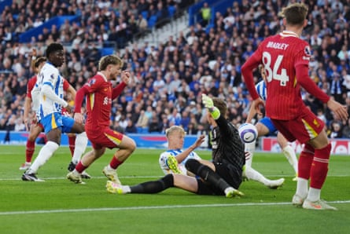

A t 5ft 7in, Harvey Elliott has never been one to stand out in a crowd. But there was only one player everyone wanted to talk to on a balmy evening in Bratislava after the forward’s match-winning display against the Netherlands .
Two brilliant goals from Elliott on Wednesday ensured England will face Germany on Saturdaynight as they try to successfully defend the European Under-21 title won in 2023 . The Liverpool player’s only regret was his ill-advised knee-slide celebration on a “ridiculously dry” pitch for the first of those.
“The emotions got the best of me and I’ve hurt my knee from it but who cares?” said Elliott having emerged from the changing room after a mandatory drugs test. “Hopefully I should be fine for the final.”
Elliott spent most of the season on Liverpool’s bench after missing several weeks with a foot injury, getting only two Premier League starts – both after the title had been won – but he is making the most of his opportunity to shine for England. Four goals leave him two behind Germany’s 6ft 6in striker Nick Woltemade in the race for the golden boot and underline Elliott’s status as one of Europe’s most promising talents.
Elliott cast doubt over his future when he arrived in Slovakia a fortnight ago. Fulham, who sold him to Liverpool as a 16-year-old for a then record compensation fee of £4.3m, Brighton and Crystal Palace are among the clubs understood to have shown an interest in signing him.
“I don’t really want to be wasting years of my career because it’s a short career,” he said. “You don’t know what’s going to happen. I need to reflect. I want to improve and be the best possible version of myself. If that’s to go somewhere else, then it’s a decision I’m going to have to make.”
With Alexis Mac Allister, Dominik Szoboszlai and the new £116m signing Florian Wirtz ahead of him, Elliott can hardly be blamed for thinking his opportunities are likely to be limited again next season if he remains at Liverpool. Part of the problem has been his versatility, able to play in several attacking roles and a midfield three, without it being obvious which is his position. Lee Carsley has used him mainly on the right of England’s attack or as a second striker – the position he took up for the superb individual winning goal against the Netherlands.
Elliott is one of two squad members who triumphed in Georgia two years ago – the other being the Toulouse defender Charlie Cresswell – although he played only eight minutes of the final after coming on for Cole Palmer.
Harvey Elliott scores for Liverpool at Brighton in May, with the Premier League title already won.Photograph: John Walton/PA
“He was definitely frustrated at the last tournament with the amount of game time he had,” Carsley said. “Him and Charlie, they had to be patient and they showed during the qualifying campaign they were ready to lead and carry the team on along with the other players.”
Carsley denied Elliott had arrived for international duty with a point to prove to Liverpool’s manager, Arne Slot. “I haven’t seen a lot of that frustration. What I have seen is someone who is determined to play and get the minutes. He’s definitely built into the tournament, having not had much game time towards the end of the season.
“We’ve had to manage his minutes in terms of the amount he has played and the intensity he plays at. He’s so explosive with the way that he moves and with his end product. We are very lucky to have him.”
Elliott may have a decision to make in the coming weeks, although for now his sights are set on leading an inexperienced group to glory in a final when the England senior head coach, Thomas Tuchel, will be present. Reflecting on his role as one of the senior players, the 22-year-old said spending the past six years at close quarters with players such as Virgil van Dijk and Mohamed Salah had been hugely beneficial.
“Coming from Liverpool, there’s a lot of leaders in that team,” he said. “Now it’s using my learning, using what I’ve seen the leaders at Liverpool do and how they construct the team. When times are tough, how they bring themselves back up and the team back up.
“There’s so many emotions throughout the game: highs, lows, where we feel tired. Just using what I’ve learned and being around to try and keep the guys going, keep the team going.”